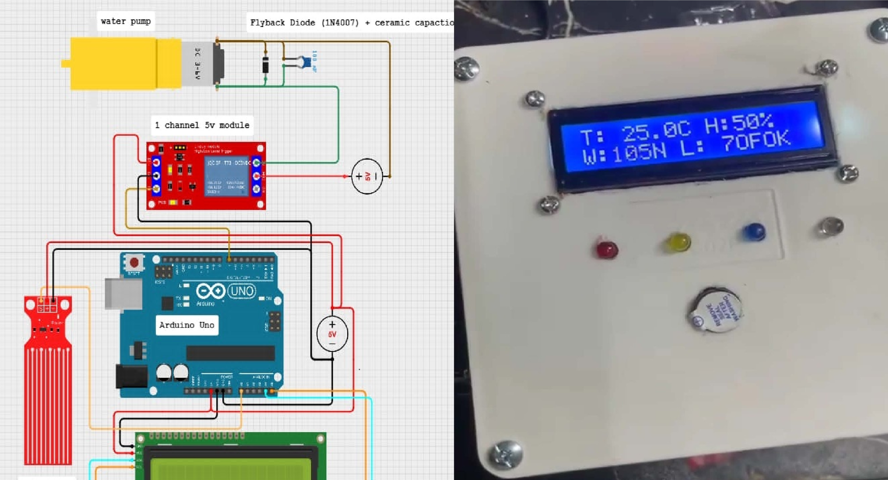
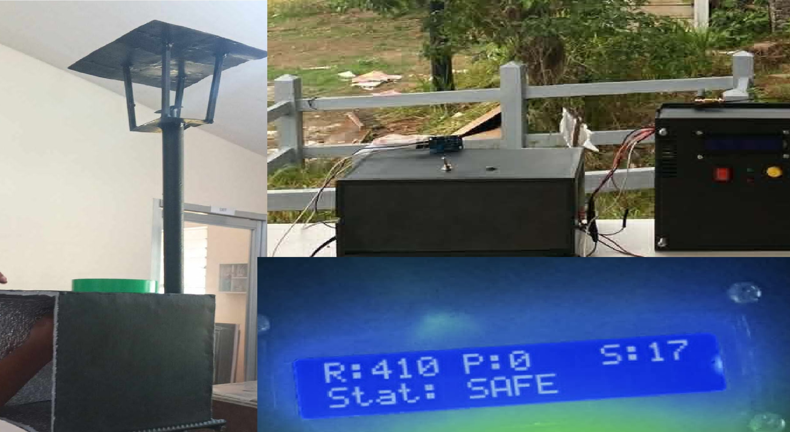
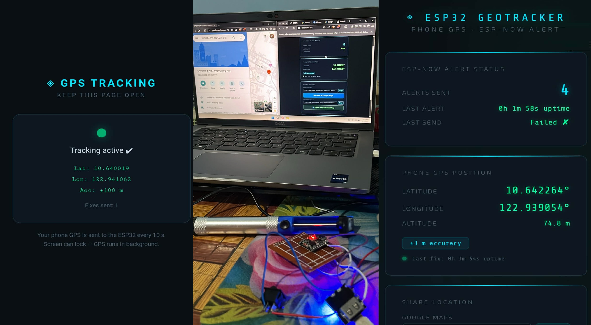
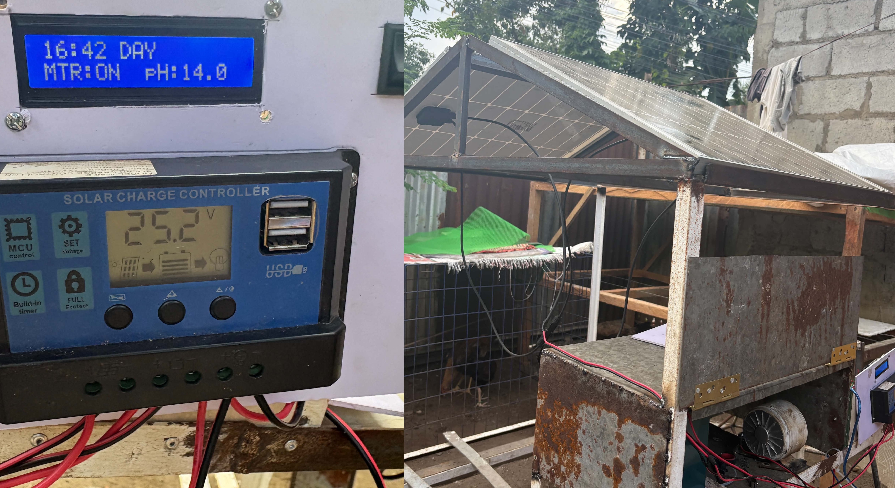
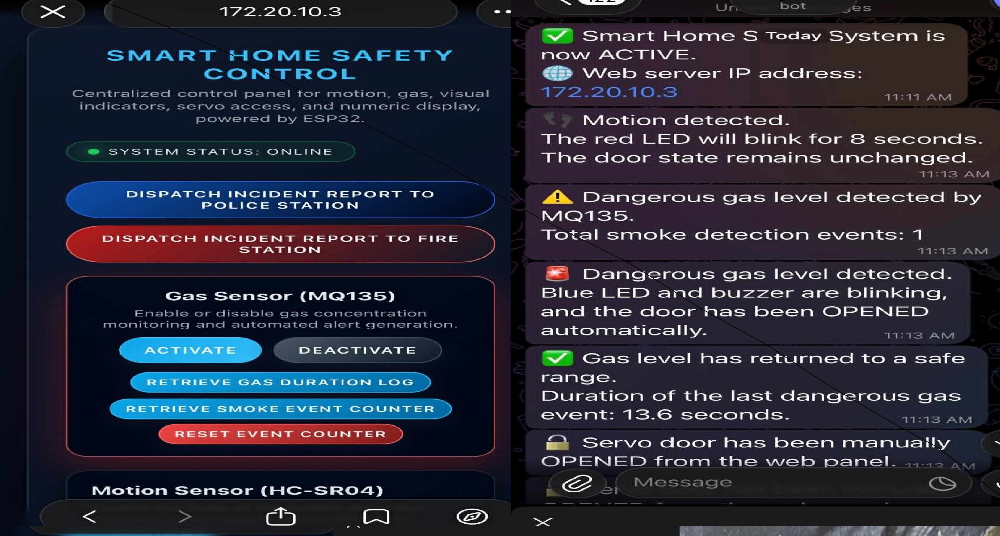
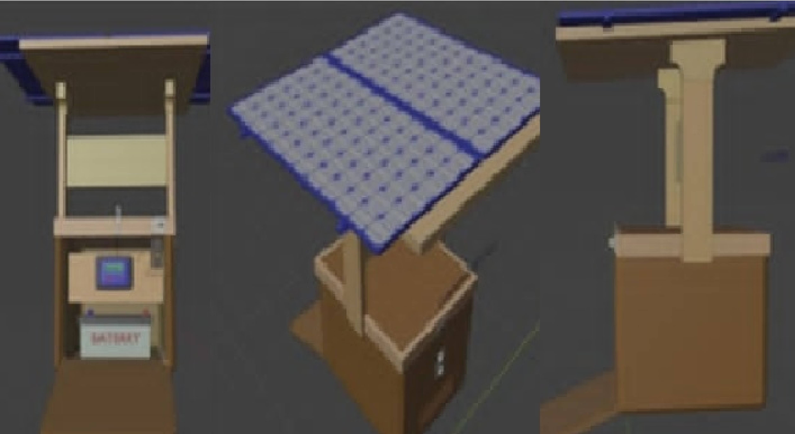

◈ My Work
Every build below was self-driven and hands-on — hardware design, firmware, web dashboards, and everything in between.
◈ Featured
◈ Thesis Commissions
These systems were fully commissioned and built under tight deadlines — while balancing a dancing career, being a student assistant, maintaining DOST-SEI scholarship and Dean's List standing, and pursuing online certifications outside of my BS CpE curriculum. Every project delivered, no shortcuts taken.
(Final output image & Papers can't be displayed due to an agreement)

Full hardware design, prototype, and final build of an automated rice fodder system. Arduino-based control logic driven by temperature/moisture sensors and water level sensors to trigger output loads. Engineered a diode-capacitor solution to eliminate relay voltage spikes that disrupted the Arduino — a problem even commercial relay modules failed to prevent.

Ensured reliable sulfur gas detection with calibrated sensor output. Designed a voltage divider circuit for the SIM800L V2 input signal. Built a complete 5V/3A power supply from scratch using a transformer, capacitors, diodes, and voltage divider — powering the entire system safely.

Dual ESP32 architecture: ESP32 Dev Module powers all cane sensors and buzzer output (parent device). ESP32-C3 (slave) hosts a web server with live GPS tracking and a wireless wrist button via ESP-NOW — triggering the master buzzer from a distance.

Calibrated a pH sensor and DS3231 RTC module with CMOS precision. Integrated a ZK-MG motor driver, safely regulated a solar panel with a charge controller, and wired a 24V DC motor with a motor governor to a 24V/25Ah battery bank. Applied diode-capacitor relay spike protection throughout.

A comprehensive home safety system commissioned for thesis. Detects smoke, fire, dangerous air quality, and intruders. Integrated with ESP32 web server for remote monitoring. Automated Telegram bot sends real-time alerts using Telegram API.

Created a detailed 3D model of a solar-powered public phone charging station for a PNU-Visayas thesis. Designed the structural layout, panel mounting, and component housing for a complete, presentation-ready model.